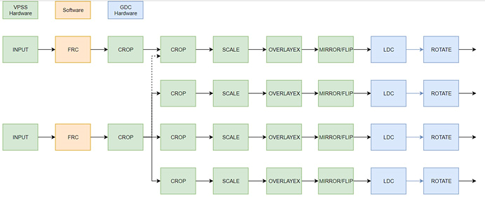
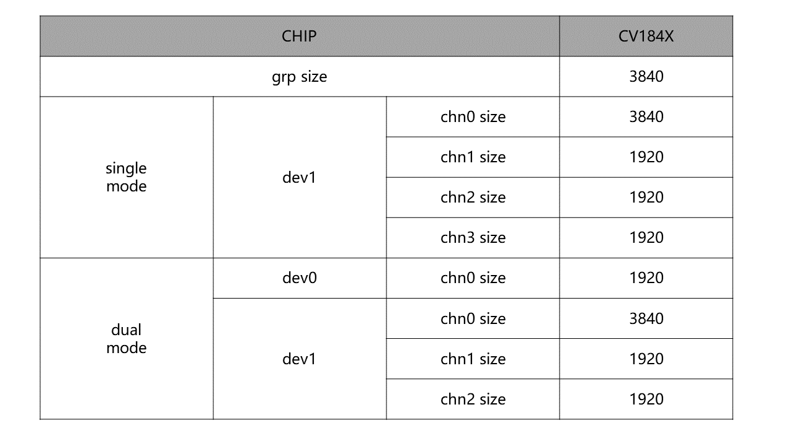

6.2. Design Overview¶
6.2.1. System Architecture¶
withunderisVPSSthis
GROUP
VPSSforUserprovidegroup ( GROUP). MaximumCountSeeVPSS_MAX_GRP_NUM Definition, each GROUPtimereuse VPSS Hardware, Hardwaresecondaryprocessingeachgroupsubmit.
CHANNEL
VPSSgroupChannel. VPSS HardwareprovidemultiplePhysicalChannel, eachChannelhasscaling, Cropetc.Function. throughBindPhysicalChannel, willPhysicalChannelOutputisautoInput, ImagescalingUserSetDestinationresolutionOutput.
Crop
Crop, is 2: groupCropandPhysicalChannelCrop
− groupCrop, VPSS forInputImageperform Crop.
− PhysicalChannelCrop, VPSS foreachPhysicalChannelOutputImageperform Crop.
Pixel formatConversion
SupportInputOutputImageDataFormatConversion.
−SupportYUV420 planar, YUV422 planar, RGB planar, RGB packed, BGR packedConversion.
Scale
scalingforImageperform. PhysicalChannelHorizontal, VerticalMinimumSupport 128 times, MaximumSupport128times.
Mirror/Flip
Mirrorthat isHorizontalimage Flip that isonunderflip. canUse Mirror + Flip implement 180 Rotation.
Overlay/Overlayex
VideooverlayRegion, CallRGN for VPSS ChannelOutputImageoverlaybitsFigure, SupportbitsFigure FormatARGB4444, ARGB1555, ARGB8888, 256 LUT(ARGB4444), Font-based.
fixedangleRotation
CallGDCfor VPSS ChannelOutputImageprocessing. Support90and270fixedangleRotationFunction.
VpssModuleinsysteminPositionas followsFigurethe:

throughCallSYSModuleprovidebindingInterface, VPSSModulecanwithVI/VDECetc.InputModuleperform Bind, willDecodingandSensorDatasendtoVPSSperform processing, canimplementImagescalingandcolorspaceConversionetc.Function. at the same timealsocanthroughbindingInterface, willVPSSModuleprocessingofafterImage, after passing through OSDcombinedsendtoVO/VENCModule, alsoSupport performonesingleDeep Learningbeforeprocessing, Then, willprocessingafterimagesendtoTPUperform Deep Learning.
table6- 1 VPSS Functionlimit
Operating mode | Function | ||
|---|---|---|---|
groupCrop | scaling | ChannelCrop | |
VI_OFFLINE_VPSS_OFFLINE | Support | Support | Support |
VI_OFFLINE_VPSS_ONLINE | Not supported | Support | Support |
VI_ONLINE_VPSS_OFFLINE | Support | Support | Support |
VI_ONLINE_VPSS_ONLINE | Not supported | Support | Support |
Note
Note: When VPSS ONLINEtime, multipleonlycanhastwogroupGRPReceivebeforeendtwosensortoData, NonemethodothernotsamesourceRequirements
6.2.2. Precautions¶
VPSSDataprocessingflowFigureas followsFigure6-1, hastwogroupINPUT. When singleINPUTUsetime, canhasfourgroupChannelOutput; When twogroupINPUTUsetime, thenfirstgroupINPUTonlyhasonegroupChannelOutput, secondgroupINPUTonlyhasthreegroupChannelOutput.
FigureTable6- 1 CV184xDataflowFigure
{kind=link}

CV184x VPSSHardwarespecification
{kind=link}
